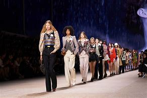
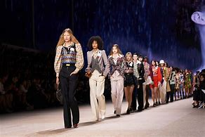

Priemier workwear is a fashion agent which helps models and personells interested in modelling and fashion to get into the fashion world,it is a world agent and enhances equality and tranparency for its customeers.The agent links models with brands to get them into big fashion shows and exhibitions for them to showcast their talents and abilities and also improve their fashion brands and boost their fame.
It enables models get into the fashions real easy with low pays as the agent has friendly and favourable finance terms.Premier workhead also works hand in hand with big fashion brands which priotise it to be number one fashion agent thus increasing chances of one being choosen as the agent exposes models to auditions.The agent welcomes everyone and anyone who is interested in fashion.this blog entails other blog post where one can click a post to view its full contents.